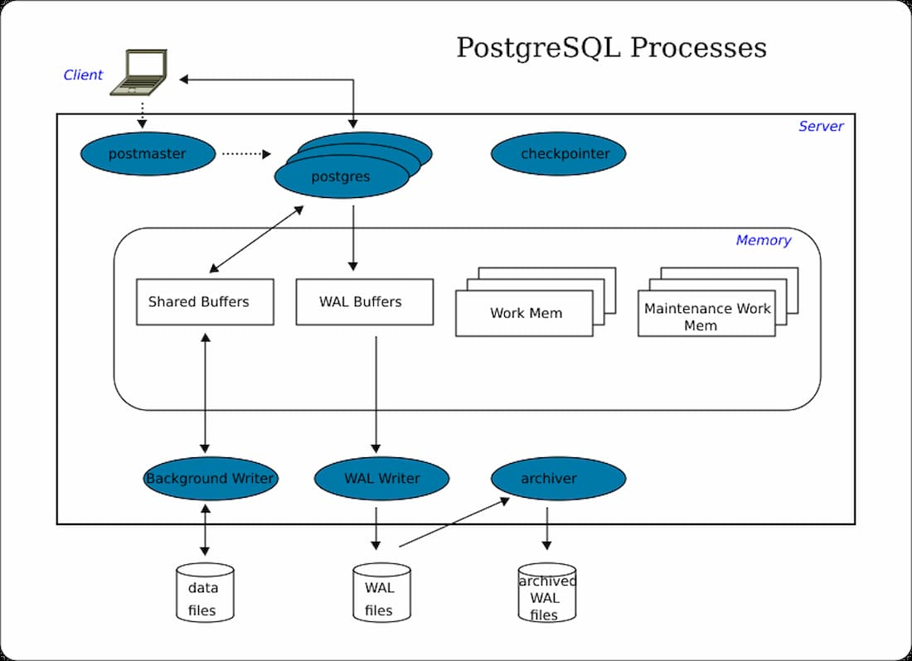

Advanced Databases
The database is one of the most important components of any system, requiring special attention to administration, data structure design, query development, triggers, views, indexes, and stored procedures. Many systems start with response times of 50-100ms, but over the years as they store more information, response times can increase to 5-10 seconds or even cause infinite blocks that affect the entire system. In this course, students will learn the definitions, concepts, and techniques to design database structures for transactional and mission-critical systems, with special attention to working from a software developer's perspective. The course focuses on PostgreSQL and covers everything from database administration to advanced optimization techniques.
Learning Objectives
- Understand the principles of database administration
- Master the logical design of databases using ER models
- Learn techniques for database optimization and performance tuning
- Master programming objects: stored procedures, triggers, views, and functions
- Create databases with proper roles and user management
- Write advanced queries and identify when to create indexes
- Implement stored procedures, views, and triggers effectively
- Understand transaction management and concurrency control
Course Outline
-
Topic 1: Database Administration Fundamentals
- Development environment setup
- Database administration in PostgreSQL
- PostgreSQL engine optimization
- User and role management
- Database creation and configuration
- Object permissions management
- Entity-Relationship (ER) model
- One-to-many relationships
- Many-to-many relationships
- Physical representation of logical design
- Normalization techniques
- Insert and update operations
- Cross join queries
- Inner join queries
- Left join and right join
- Indexes: types and when to apply them
- Pagination concepts (LIMIT and OFFSET)
- Grouping and ordering functions
- Set theory in SQL
- Views for security and abstraction
- Functions and their importance
- Stored procedures
- Triggers (disparadores)
- Best practices for database programming
- Optimistic locking
- Pessimistic locking
- Transaction management
- Concurrency control in database engines
- ACID properties
Topic 2: Logical Database Design
Topic 3: Advanced Queries with Databases
Topic 4: Advanced Database Operations
Topic 5: Transactions and Concurrency


Integrating GPU-accelerated AI tools into this Advanced Databases course transforms the learning experience by enabling students to process and analyze massive datasets with unprecedented speed. GPU computing allows for rapid execution of complex queries, real-time query optimization using machine learning models, and intelligent index recommendation systems. Students can leverage AI-powered database tuning tools that use reinforcement learning to automatically optimize database configurations, predict query performance, and detect anomalies in database behavior. With campus GPU infrastructure, learners can experiment with vector databases for AI applications, implement neural network-based query optimizers, and explore GPU-accelerated data processing frameworks like RAPIDS for PostgreSQL. AI-driven tools can analyze query execution plans, suggest optimal indexing strategies, and even predict future database bottlenecks, preparing students for next-generation database systems used in big data analytics, real-time applications, and AI-powered enterprise systems.
Instructor
Ricardo Laredo
Systems Engineer - Blockchain